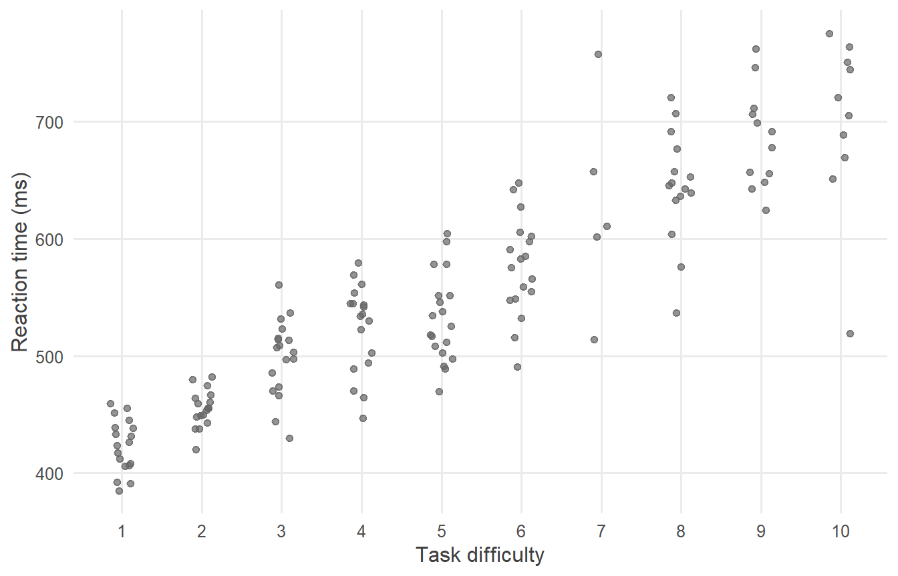
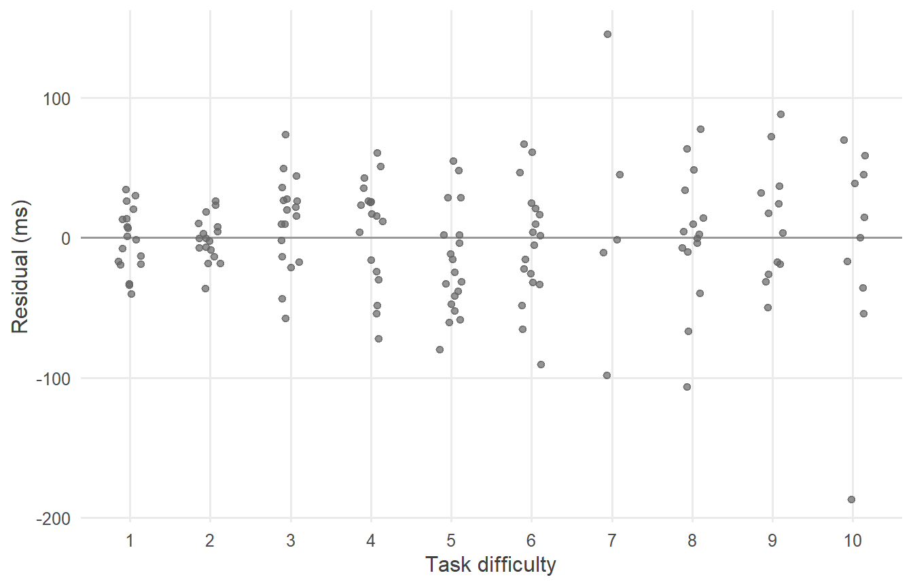
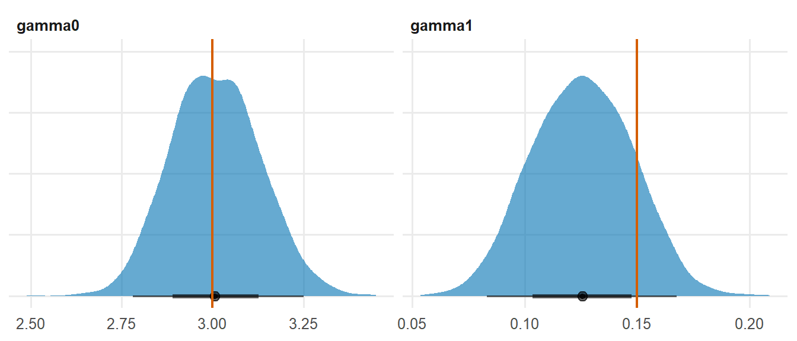
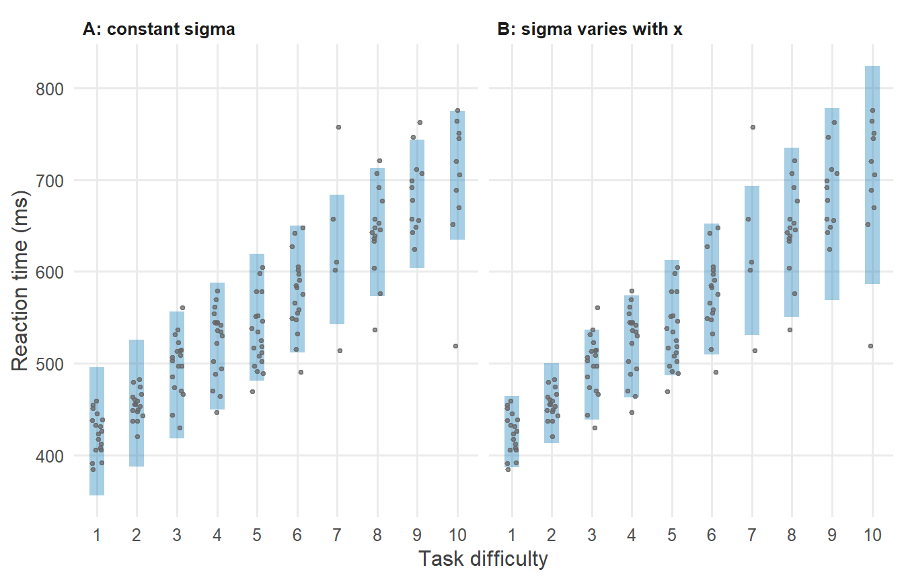

library(tidyverse)
library(cmdstanr)
library(posterior)
library(tidybayes)
source("R/theme.R")
source("R/utils.R")第 1 章 为什么学 Stan
灵活性与透明性：当现成函数“差一点点”时，Stan 让你写出真正想要的模型，并让每一个假设都看得见。
R 里已经有 lm()、glm()、lme4，还有建立在 Stan 之上的 brms。对很多日常分析来说，它们已经足够好。那么，为什么还要花时间学习自己写 Stan 程序？
本章用一个具体例子回答这个问题。答案可以归结为两个词：灵活性和透明性。
1 本章要回答的问题
- 已经有
lm()、glm()和 brms，为什么还要自己写 Stan 模型？ - 灵活性体现在哪里：现成函数“差一点点”时怎么办？
- 透明性体现在哪里：黑箱函数里藏着哪些看不见的默认设定？
- 学 Stan 的代价是什么？什么时候不必用 Stan？
2 公式卡片
本章比较两个模型。它们的均值部分完全相同，区别只在于残差标准差 \(\sigma\)。
模型 A：残差标准差恒定（lm() 的默认假设）
\[ \begin{aligned} y_i &\sim \operatorname{Normal}(\mu_i,\ \sigma) \\ \mu_i &= \alpha + \beta\, x_i \end{aligned} \]
模型 B：残差标准差随 \(x\) 变化
\[ \begin{aligned} y_i &\sim \operatorname{Normal}(\mu_i,\ \sigma_i) \\ \mu_i &= \alpha + \beta\, x_i \\ \log \sigma_i &= \gamma_0 + \gamma_1\, x_i \end{aligned} \]
模型 B 只多了一行：\(\sigma\) 不再是一个常数，而是随 \(x\) 变化。之所以对 \(\log \sigma_i\) 建立线性关系，是因为标准差必须为正，而 \(\exp(\cdot)\) 的结果永远为正。
3 模拟数据
研究情境：一项认知实验中，被试完成不同难度（1–10 级）的任务，研究者记录反应时（毫秒）。一个常见现象是：任务越难，反应时越长，而且个体之间的差异也越大。
set.seed(2026)
N <- 150
alpha_true <- 400 # mean RT at difficulty 0 (ms)
beta_true <- 30 # RT increase per difficulty level (ms)
gamma0_true <- 3 # log SD at difficulty 0
gamma1_true <- 0.15 # increase in log SD per difficulty level
sim_data <- tibble(
difficulty = sample(1:10, N, replace = TRUE),
sigma = exp(gamma0_true + gamma1_true * difficulty),
rt = alpha_true + beta_true * difficulty + rnorm(N, 0, sigma)
)
sim_data |>
group_by(difficulty) |>
summarise(n = n(), mean_rt = mean(rt), sd_rt = sd(rt))#> # A tibble: 10 × 4
#> difficulty n mean_rt sd_rt
#> <int> <int> <dbl> <dbl>
#> 1 1 18 423. 22.6
#> 2 2 17 455. 16.0
#> 3 3 18 499. 32.9
#> 4 4 18 524. 37.8
#> 5 5 19 532. 37.9
#> 6 6 18 576. 41.9
#> 7 7 5 628. 89.0
#> 8 8 15 645. 47.3
#> 9 9 12 685. 42.3
#> 10 10 10 699. 75.3按难度分组汇总后可以看到，反应时的标准差从最低难度的约 23 毫秒增长到最高难度的约 90 毫秒（真值）。
ggplot(sim_data, aes(x = difficulty, y = rt)) +
geom_jitter(width = 0.15, height = 0) +
scale_x_continuous(breaks = 1:10) +
labs(x = "Task difficulty", y = "Reaction time (ms)")
4 先用 lm() 看一看
fit_lm <- lm(rt ~ difficulty, data = sim_data)
coef(summary(fit_lm))#> Estimate Std. Error t value Pr(>|t|)
#> (Intercept) 393.82113 6.991444 56.32901 7.107623e-102
#> difficulty 31.17413 1.231316 25.31774 1.193121e-55均值部分估计得不错。但是 lm() 假设所有观测共享同一个 \(\sigma\)。看残差图：
tibble(difficulty = sim_data$difficulty, residual = resid(fit_lm)) |>
ggplot(aes(x = difficulty, y = residual)) +
geom_hline(yintercept = 0, colour = "grey60") +
geom_jitter(width = 0.15, height = 0) +
scale_x_continuous(breaks = 1:10) +
labs(x = "Task difficulty", y = "Residual (ms)")
残差呈喇叭形，这是教科书式的“异方差”。lm() 本身没法把“\(\sigma\) 随难度变化”写进模型。常见的补救办法是变换 \(y\)、改用稳健标准误，或者换一个专门的函数。每一种办法都是在绕开问题，而不是直接描述问题。
5 Stan 代码
在 Stan 里，我们直接把公式卡片写下来。模型 A：
// Chapter 1: Linear regression with constant residual SD
//
// y_i ~ Normal(alpha + beta * x_i, sigma)
data {
int<lower=0> N; // number of observations
vector[N] x; // predictor (task difficulty)
vector[N] y; // outcome (reaction time, ms)
}
parameters {
real alpha; // intercept
real beta; // slope
real<lower=0> sigma; // residual SD, the same for every observation
}
model {
// Priors
target += normal_lpdf(alpha | 400, 100);
target += normal_lpdf(beta | 0, 50);
target += exponential_lpdf(sigma | 0.02);
// Likelihood
target += normal_lpdf(y | alpha + beta * x, sigma);
}
generated quantities {
array[N] real y_rep = normal_rng(alpha + beta * x, sigma);
}模型 B：
// Chapter 1: Linear regression whose residual SD changes with x
//
// y_i ~ Normal(mu_i, sigma_i)
// mu_i = alpha + beta * x_i
// log sigma_i = gamma0 + gamma1 * x_i
data {
int<lower=0> N; // number of observations
vector[N] x; // predictor (task difficulty)
vector[N] y; // outcome (reaction time, ms)
}
parameters {
real alpha; // intercept of the mean
real beta; // slope of the mean
real gamma0; // intercept of log SD
real gamma1; // slope of log SD
}
model {
vector[N] mu = alpha + beta * x;
vector[N] sigma = exp(gamma0 + gamma1 * x); // one SD per observation
// Priors
target += normal_lpdf(alpha | 400, 100);
target += normal_lpdf(beta | 0, 50);
target += normal_lpdf(gamma0 | 3, 2);
target += normal_lpdf(gamma1 | 0, 1);
// Likelihood
target += normal_lpdf(y | mu, sigma);
}
generated quantities {
array[N] real y_rep = normal_rng(alpha + beta * x, exp(gamma0 + gamma1 * x));
}两个程序的差别一目了然：
| 模型 A | 模型 B | |
|---|---|---|
parameters |
real<lower=0> sigma; |
real gamma0; 和 real gamma1; |
model |
— | vector[N] sigma = exp(gamma0 + gamma1 * x); |
| 似然 | normal_lpdf(y | alpha + beta * x, sigma) |
normal_lpdf(y | mu, sigma)，此时 sigma 是一个向量 |
公式里多了一行，代码里也只多了一行。这就是灵活性：你能写下的公式，就能写成 Stan 程序。
6 R 端运行
stan_data <- list(
N = nrow(sim_data),
x = sim_data$difficulty,
y = sim_data$rt
)
mod_a <- cmdstan_model("stan/ch01_constant.stan")
mod_b <- cmdstan_model("stan/ch01_heteroscedastic.stan")
fit_a <- mod_a$sample(data = stan_data, seed = 2026, chains = 4,
parallel_chains = 4, refresh = 0)#> Running MCMC with 4 parallel chains...
#>
#> Chain 1 finished in 0.2 seconds.
#> Chain 2 finished in 0.2 seconds.
#> Chain 3 finished in 0.2 seconds.
#> Chain 4 finished in 0.2 seconds.
#>
#> All 4 chains finished successfully.
#> Mean chain execution time: 0.2 seconds.
#> Total execution time: 0.4 seconds.fit_b <- mod_b$sample(data = stan_data, seed = 2026, chains = 4,
parallel_chains = 4, refresh = 0)#> Running MCMC with 4 parallel chains...
#>
#> Chain 1 finished in 0.5 seconds.
#> Chain 2 finished in 0.6 seconds.
#> Chain 3 finished in 0.6 seconds.
#> Chain 4 finished in 0.6 seconds.
#>
#> All 4 chains finished successfully.
#> Mean chain execution time: 0.6 seconds.
#> Total execution time: 0.7 seconds.7 后验整理与可视化
7.1 参数估计
fit_a$summary(c("alpha", "beta", "sigma"))#> # A tibble: 3 × 10
#> variable mean median sd mad q5 q95 rhat ess_bulk ess_tail
#> <chr> <dbl> <dbl> <dbl> <dbl> <dbl> <dbl> <dbl> <dbl> <dbl>
#> 1 alpha 394. 394. 7.03 7.18 383. 406. 1.00 1702. 2016.
#> 2 beta 31.1 31.1 1.26 1.32 29.0 33.1 1.00 1681. 2003.
#> 3 sigma 41.9 41.8 2.56 2.56 37.9 46.3 1.01 2140. 1526.fit_b$summary(c("alpha", "beta", "gamma0", "gamma1"))#> # A tibble: 4 × 10
#> variable mean median sd mad q5 q95 rhat ess_bulk ess_tail
#> <chr> <dbl> <dbl> <dbl> <dbl> <dbl> <dbl> <dbl> <dbl> <dbl>
#> 1 alpha 395. 394. 4.85 4.71 3.87e+2 403. 1.00 2192. 2194.
#> 2 beta 31.0 31.0 1.20 1.21 2.91e+1 33.0 1.00 2241. 2236.
#> 3 gamma0 3.01 3.01 0.123 0.125 2.81e+0 3.21 1.00 1747. 2245.
#> 4 gamma1 0.126 0.126 0.0222 0.0233 8.95e-2 0.162 1.00 1696. 2051.两个模型对均值部分（\(\alpha\)、\(\beta\)）的估计相近。模型 B 还告诉我们：难度每增加一级，\(\log\sigma\) 增加约 0.126，也就是标准差大约乘以 1.13。这个量本身可能就是一个有意义的研究发现：任务越难，个体差异越大。
fit_b |>
gather_draws(gamma0, gamma1) |>
ggplot(aes(x = .value)) +
stat_halfeye(fill = f2s_colors[["post"]], alpha = 0.6, normalize = "panels") +
geom_vline(
data = tibble(.variable = c("gamma0", "gamma1"), true = c(gamma0_true, gamma1_true)),
aes(xintercept = true), colour = f2s_colors[["truth"]], linewidth = 0.8
) +
facet_wrap(~ .variable, scales = "free") +
labs(x = NULL, y = NULL) +
theme(axis.text.y = element_blank())
7.2 哪个模型更像数据？
两个模型都在 generated quantities 中生成了 y_rep。把每个难度水平上 y_rep 的 90% 区间和观测数据画在一起：
pred_interval <- function(fit, label) {
fit |>
spread_draws(y_rep[i]) |>
left_join(sim_data |> mutate(i = row_number()), by = "i") |>
group_by(difficulty) |>
summarise(
lower = quantile(y_rep, 0.05),
upper = quantile(y_rep, 0.95)
) |>
mutate(model = label)
}
intervals <- bind_rows(
pred_interval(fit_a, "A: constant sigma"),
pred_interval(fit_b, "B: sigma varies with x")
)
ggplot(intervals, aes(x = difficulty)) +
geom_linerange(aes(ymin = lower, ymax = upper),
colour = f2s_colors[["post"]], linewidth = 4, alpha = 0.35) +
geom_jitter(data = sim_data, aes(y = rt), width = 0.15, height = 0, size = 0.8) +
facet_wrap(~ model) +
scale_x_continuous(breaks = 1:10) +
labs(x = "Task difficulty", y = "Reaction time (ms)")
还可以数一数：在低难度（1–3）和高难度（8–10）两段，各有多大比例的观测落在 90% 预测区间内？理想情况下应该接近 90%。
coverage <- function(fit, label) {
fit |>
spread_draws(y_rep[i]) |>
group_by(i) |>
summarise(lower = quantile(y_rep, 0.05), upper = quantile(y_rep, 0.95)) |>
left_join(sim_data |> mutate(i = row_number()), by = "i") |>
mutate(range = case_when(
difficulty <= 3 ~ "Low (1-3)",
difficulty >= 8 ~ "High (8-10)",
TRUE ~ "Middle (4-7)"
)) |>
group_by(range) |>
summarise(coverage = mean(rt >= lower & rt <= upper)) |>
mutate(model = label)
}
bind_rows(
coverage(fit_a, "A: constant sigma"),
coverage(fit_b, "B: sigma varies with x")
) |>
pivot_wider(names_from = range, values_from = coverage) |>
select(model, `Low (1-3)`, `Middle (4-7)`, `High (8-10)`) |>
knitr::kable(digits = 2)| model | Low (1-3) | Middle (4-7) | High (8-10) |
|---|---|---|---|
| A: constant sigma | 0.98 | 0.92 | 0.84 |
| B: sigma varies with x | 0.92 | 0.88 | 0.95 |
模型 A 在低难度处覆盖率偏高（区间太宽，对预测过于保守），在高难度处覆盖率偏低（区间太窄，对预测过于自信）。模型 B 在三段上的覆盖率都更接近 90%。样本量有限时这些比例本身也有波动，所以更可靠的证据是 图 4 中区间宽度的整体形态。
8 为什么这样写
8.1 为什么说 Stan 更灵活？
lm()、glm() 这类函数提供的是模板：你从有限的选项中挑一个，模板替你写好模型。只要研究问题恰好落在模板里，这非常高效。
一旦问题“差一点点”落在模板外，比如本章的异方差、自变量带测量误差、结果有上下界、观测中混有一部分随机猜测者，你就只能寻找另一个恰好实现了这个变体的 R 包，或者退而求其次去近似。
Stan 提供的不是模板，而是一门描述概率模型的语言。只要你能把模型写成公式，就能逐行翻译成 Stan 程序。本系列后面的章节会反复看到这一点：从线性回归到 logistic 回归，只换一行似然（第 7 章）；从单层模型到层级模型，只是让参数也有自己的分布（第 10 章）；离散的潜在类别，也能通过边缘化写进模型（第 15 章）。
8.2 为什么说 Stan 更透明？
lm(rt ~ difficulty) 只有一行，但它背后有好几个没有写出来的假设：
| 假设 | 在 lm() 中 |
在本章的 Stan 程序中 |
|---|---|---|
| 残差服从正态分布 | 隐含 | normal_lpdf(y | ...)，写在代码里 |
| 残差标准差恒定 | 隐含 | 模型 A 写成 real<lower=0> sigma;；模型 B 写成 exp(gamma0 + gamma1 * x) |
| 观测相互独立 | 隐含 | 似然是对每个观测的对数密度求和 |
| 参数的先验 | 不存在（相当于平坦先验） | 每个参数一行，明确写出 |
在 Stan 程序里，模型的每一个假设都是一行看得见的代码。这带来三个好处：
- 你自己清楚模型到底假设了什么；
- 审稿人、导师和合作者能够逐行核对，而不必猜测某个函数的默认设置；
- 想改变某个假设时，你知道该改哪一行。
8.3 brms 不也能做这些吗？
可以。brms 是一个非常优秀的 R 包，它本身就是建立在 Stan 之上的：你写出 brms 的公式，brms 把它翻译成 Stan 程序，再交给 Stan 运行。本章的模型 B，用 brms 可以写成 bf(rt ~ difficulty, sigma ~ difficulty)。
学会 Stan 和使用 brms 并不矛盾，反而相辅相成：
- 当 brms 支持你的模型时，用它可以省很多时间；
- 当你想知道 brms 到底拟合了什么时，
brms::make_stancode()会给出它生成的 Stan 代码，而读懂这段代码需要的正是本系列教的东西； - 当你的模型超出 brms 的公式语法时，你可以直接写 Stan。
8.4 学 Stan 的代价是什么？
坦率地说，有三点：
- 要自己写模型。没有模板替你做决定，每个先验、每个约束都需要你想清楚。这既是代价，也是收获。
- 要编译。每个 Stan 程序第一次运行前要编译成可执行文件，通常需要几十秒。
- 要理解采样器。当模型运行出问题（比如发散转移），你需要知道它在提示什么，以及如何改写模型。第 6 章和第 11–12 章专门讲这些。
如果你的问题就是一个标准的线性回归，数据充足，也不需要完整的后验分布，lm() 完全够用。Stan 的价值在于：当你的研究问题需要一个“不那么标准”的模型时，你不会被工具卡住。
9 常见错误
| 错误认识 | 实际情况 |
|---|---|
“贝叶斯一定要用 Stan，频率学派一定要用 lm()” |
工具和统计学派不是一一对应的。Stan 也能做优化（$optimize()），lm() 的结果也可以从贝叶斯角度理解 |
| “Stan 只适合复杂模型” | 简单模型同样受益于透明性。本系列从最简单的模型开始，正是为了把每一行都讲清楚 |
| “学了 Stan 就不需要 brms 了” | 两者互补。会读 Stan 代码，才能真正用好 brms |
| “Stan 程序越长越专业” | 好的 Stan 程序应当与公式一一对应，尽量短而清楚 |
10 练习
练习 1 找出隐含假设
不看本章的表格，列出 lm(rt ~ difficulty) 的所有隐含假设，然后在 stan/ch01_constant.stan 中为每一条假设找到对应的代码行。
提示参考答案
| 假设 | 对应代码 |
|---|---|
| 均值是难度的线性函数 | alpha + beta * x |
| 残差服从正态分布 | normal_lpdf(y | ...) |
| 所有观测共享同一个 \(\sigma\) | real<lower=0> sigma; 是一个标量 |
| 观测相互独立 | 对向量 y 的对数密度直接求和，没有协方差结构 |
| 参数的先验 | lm() 没有先验；Stan 程序中的三行 target += ..._lpdf(...) |
最后一条是 Stan 程序比 lm() 多出来的假设。它不是负担，而是把原本隐含的东西（平坦先验）换成了一个经过思考、可以讨论的选择。
练习 2 为什么用 \(\exp\)？
模型 B 中写的是 \(\log\sigma_i = \gamma_0 + \gamma_1 x_i\)，即 \(\sigma_i = \exp(\gamma_0 + \gamma_1 x_i)\)。如果直接写 \(\sigma_i = \gamma_0 + \gamma_1 x_i\)，会出现什么问题？
提示参考答案
线性函数 \(\gamma_0 + \gamma_1 x_i\) 可以取负值，而标准差必须为正。一旦采样器探索到某组 \((\gamma_0, \gamma_1)\) 使得某个 \(\sigma_i \le 0\)，normal_lpdf 就无法计算，这一步会被拒绝。
用 \(\exp(\cdot)\) 包裹之后，无论 \(\gamma_0\)、\(\gamma_1\) 取什么值，\(\sigma_i\) 都为正，参数可以在整个实数空间中自由取值。这里的 \(\log\) 就是一个链接函数。第 7 章的 logit 链接，是同一个思路在概率上的应用。
另外，\(\gamma_1\) 也因此有了乘法解释：\(x\) 每增加 1，\(\sigma\) 乘以 \(\exp(\gamma_1)\)。
练习 3 如果变异随难度先增后减？
假设在某些任务中，反应时的标准差在中等难度时最大。应该怎样修改模型 B？
提示参考答案
在 \(\log\sigma_i\) 的线性预测中加入二次项：
\[ \log \sigma_i = \gamma_0 + \gamma_1 x_i + \gamma_2 x_i^2 \]
Stan 程序中只需要在 parameters 块加一行 real gamma2;，在 model 块中把标准差改为：
vector[N] sigma = exp(gamma0 + gamma1 * x + gamma2 * square(x));再给 gamma2 加一行先验即可。\(\gamma_2 < 0\) 对应“先增后减”。这个练习再次说明：公式改一项，代码改一行。
练习 4 比较两个模型的预测
用两个模型的后验，分别计算难度为 10 时反应时的 90% 预测区间，并与真实的数据生成分布比较。
提示参考答案
x_new <- 10
pred_a <- fit_a |>
spread_draws(alpha, beta, sigma) |>
mutate(y_new = rnorm(n(), alpha + beta * x_new, sigma))
pred_b <- fit_b |>
spread_draws(alpha, beta, gamma0, gamma1) |>
mutate(y_new = rnorm(n(), alpha + beta * x_new, exp(gamma0 + gamma1 * x_new)))
truth_interval <- qnorm(
c(0.05, 0.95),
mean = alpha_true + beta_true * x_new,
sd = exp(gamma0_true + gamma1_true * x_new)
)
tibble(
source = c("Model A", "Model B", "True generating process"),
lower = c(quantile(pred_a$y_new, 0.05), quantile(pred_b$y_new, 0.05), truth_interval[1]),
upper = c(quantile(pred_a$y_new, 0.95), quantile(pred_b$y_new, 0.95), truth_interval[2])
) |>
mutate(width = upper - lower) |>
knitr::kable(digits = 0)| source | lower | upper | width |
|---|---|---|---|
| Model A | 635 | 777 | 142 |
| Model B | 582 | 825 | 243 |
| True generating process | 552 | 848 | 296 |
模型 A 的预测区间明显比真实分布窄，因为它用全体数据的“平均”标准差来预测最难的任务。模型 B 的区间宽得多，明显更接近真实分布；它仍略窄一些，是因为这份数据中 \(\gamma_1\) 的后验均值略低于真值。当研究目的包括预测（比如为高难度任务设定时间限制）时，这个差别有实际意义。
11 小结
- 灵活性：Stan 是描述概率模型的语言，而不是模板。公式多一行，代码多一行。
- 透明性：模型的每一个假设，包括分布、方差结构、独立性和先验，都是一行看得见、可以修改的代码。
- Stan 与 brms 互补：brms 生成 Stan 代码，读懂 Stan 让你真正理解 brms 在做什么。
- 学 Stan 的代价是要自己想清楚模型、要编译、要理解采样器。这份教程的目的，就是让这些代价变得可控。
你写下的公式，就是你运行的模型。
12 延伸
- 下一章：第 2 章 Stan 程序的骨架，看一个 Stan 程序由哪些块组成，每个块何时执行。
- 本章的异方差模型属于“分布回归”（同时对均值和标准差建模）。在真实研究中，这类模型常用于分析个体差异如何随条件变化。Stan 模型库中有更多完整案例。
13 参考资料
- Stan 的设计理念与语言概览见 Carpenter 等 (2017)。
- Stan User’s Guide 的 Regression Models 一章给出了各类回归模型的写法 (Stan Development Team, 2026)。
- 把模型构建、检验与修改作为一个完整流程来看待的思路，见 Gelman 等 (2020)。
- Statistical Rethinking 第 1 章讨论了为什么统计模型应当被看作可以检查的“机器”，而不是现成的检验程序 (McElreath, 2020)。
Carpenter, B., Gelman, A., Hoffman, M. D., Lee, D., Goodrich, B., Betancourt, M., Brubaker, M., Guo, J., Li, P., & Riddell, A. (2017). Stan: A Probabilistic Programming Language. Journal of Statistical Software, 76(1), 1～32. https://doi.org/10.18637/jss.v076.i01
Gelman, A., Vehtari, A., Simpson, D., Margossian, C. C., Carpenter, B., Yao, Y., Kennedy, L., Gabry, J., Bürkner, P.-C., & Modrák, M. (2020). Bayesian Workflow. https://arxiv.org/abs/2011.01808
McElreath, R. (2020). Statistical Rethinking: A Bayesian Course with Examples in R and Stan (2 版). CRC Press.
Stan Development Team. (2026). Stan User’s Guide (Version 2.40). https://mc-stan.org/docs/stan-users-guide/